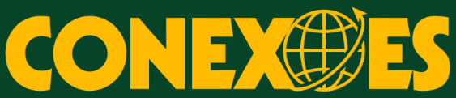

2007
Mais uma peça selecta(performer e intervenção sonora ao vivo)
Berlim, Alemanha. Move Berlim Festival. de Princesa Ricardo Marinelli e Michelle Moura.
música
Mais uma peça selecta era um duo da Michelle Moura e Princesa Ricardo, do qual posteriormente me convidaram pra participar fazendo uma discotecagem ao vivo. Como o trabalho era todo baseado na relação das ações com o significado das letras, para as viagens internacionais, meu trabalho foi também pesquisar músicas de cada lugar que pudessem ser semelhantes naquele contexto.
2008
Mais uma peça selecta(performer e intervenção sonora ao vivo)
De Princesa Ricardo Marinelli e Michelle Moura. Bienal de Dança do Sesc Santos · 3ª Bienal Internacional de Dança do Caribe, Havana, Cuba.

Nova York · Sydney 2002–2003
com Romeu é um peixe no aquário
Berlim 2007 · Havana 2008
com Mais uma peça selecta
Bolonha 2014
com Travesqueens
Montevidéu 2014
com La Lucha
Madri 2022
com Fronterizas
09